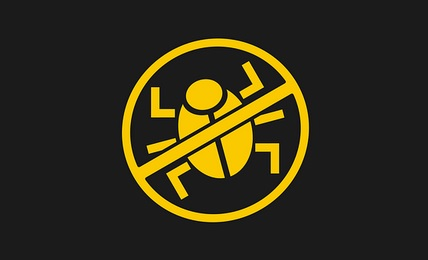
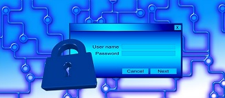
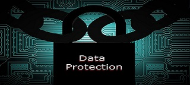

- Inicio
- MATERIAL DE LECTURA
- Presentación Introductoria a HTML5
CONCEPTO BASICO DE SEGURIDAD INFORMATICA
Es imposible eliminar el riesgo Seguridad es un concepto asociado a la certeza, falta de riesgo o contingencia, conviene aclarar que no siendo posible la certeza absoluta, el elemento de riesgo está siempre presente independiente de las medidas que tomemos, por lo que debemos hablar de niveles de seguridad, la seguridad absoluta no es posible y en adelante entenderemos que la seguridad informática es un conjunto de técnicas encaminadas a obtener altos niveles de seguridad en los sistemas informáticos.
Lo importante es proteger la información Si bien es cierto que todos los componentes de un sistema informático están expuestos a un ataque (hardware, software y datos) son los datos y la información los sujetos principales de protección de las técnicas de seguridad. La seguridad informática se dedica principalmente a proteger la confidencialidad, la integridad y disponibilidad de la información.
CONFIDENCIALIDADLa confidencialidad o privacidad es el más obvio de los aspecto y se refiere a que la información solo puede ser conocida por individuos autorizados. Existen infinidad de posibles ataques contra la privacidad, especialmente en la comunicación de los datos. La transmisión a través de un medio presenta múltiples oportunidades para ser interceptada y copiada: las líneas "pinchadas" la intercepción o recepcion electromagnética no autorizada o la simple intrusión directa en los equipos donde la información está físicamente almacenada.
 INTEGRIDAD
INTEGRIDADLa integridad se refiere a la seguridad de que una información no ha sido alterada, borrada, reordenada, copiada, etc., bien durante el proceso de transmisión o en su propio equipo de origen. Es un riesgo común que el atacante al no poder descifrar un paquete de información y, sabiendo que es importante, simplemente lo intercepte y lo borre.
DISPONIBILIDADLa disponibilidad de la información se refiere a la seguridad que la información pueda ser recuperada en el momento que se necesite, esto es, evitar su pérdida o bloqueo, bien sea por ataque doloso, mala operación accidental o situaciones fortuitas o de fuerza mayor.
OTROS PROBLEMAS COMUNESOtros problemas importantes de seguridad son la autenticación, es decir la prevención de suplantaciones, que se garantice que quien firma un mensaje es realmente quien dice ser; la no repudiación, o sea que alguien niegue haber enviado una determinada información (que efectivamente envió) y los controles de acceso, esto es quien tiene autorización y quien no para acceder a una pieza de información determinada. Finalmente se tiene el problema de la verificación de la propiedad de la información, es decir que una vez que se ha detectado un fraude determinar la procedencia de la información dolosa.
DESASTRES NATURALES Y NO INTENCIONALESNo todos los riesgos que amenazan la información son de origen doloso. Es por ello que las medidas de seguridad no deben limitarse a la mera protección contra ataques e intrusiones de terceros, pues dentro de la misma organización y por parte de individuos de confianza existen riesgos contra la disponibilidad de la información ya sea por negligencia, descuido, ignorancia o cualquier otro tipo de mala práctica no dolosa la información puede ser alterada, sustituida o permanentemente borrada. Además están siempre presentes los riesgos de pérdida o alteración por virus o situaciones fortuitas de fuerza mayor, tales como incendios, inundaciones o catástrofes naturales.
 LAS TECNICAS DE RESPALDO Y LOS SISTEMAS REDUNDANTES
LAS TECNICAS DE RESPALDO Y LOS SISTEMAS REDUNDANTESLos sistemas de respaldo (backup) y los sistemas redundantes son dos técnicas para proteger los datos contra pérdida por borrado accidental o desastres fortuitos, ambos sistemas son complementarios en cuanto a la seguridad que ofrecen ya que tanto los respaldos como la redundancia por si solos tienen problemas.
REDUNDANCIA: LOS SISTEMAS RAIDUn RAID (matriz redundante de discos económicos) es un conjunto de unidades de disco que aparecen lógicamente como si fueran uno solo. Así los datos, distribuidos en bandas, sé dividen entre dos o más unidades. Esta técnica incrementa el rendimiento y proporciona una redundancia que protege contra el fallo de uno de los discos de la formación. Existen varios niveles RAID a partir del nivel 0, en el que los datos se dispersan en varias unidades pero no hay redundancia (mas eficiencia, menos cero seguridad), luego el nivel 1 o mirroring (espejo) en el cual los datos se escriben duplicados en distintas unidades, este método no incrementa el rendimiento pero si la seguridad y es, de hecho uno de los más utilizados. Los demás niveles RAID son una combinación de los conceptos anteriores y buscan aumentar la seguridad y el rendimiento simultáneamente.
Existen sistemas operativos, que ofrecen administración RAID incorporada, como por ejemplo Windows NT que ofrece los niveles 0, 1 y 5. Como es obvio si se implementa el nivel 1 (discos espejo, donde todo lo que se escribe en un disco es duplicado automáticamente) , la duplicación debe ser en un disco físico diferente.
TOLERANCIA A FALLOSLa tolerancia a fallos es la capacidad de un sistema a responder a un suceso inesperado, como puede ser una falla en el suministro eléctrico o una falla de hardware de forma que no se pierdan datos. Es importante notar que la redundancia no protege contra el borrado accidental, la operación negligente, etc. ya que cualquier operación (aún las erroneas) es automáticamente duplicada en todas las unidades. Así, la redundancia, junto con los sistemas de alimentación ininterrumpida (UPS y grupos electrógenos)proporcionan seguridad solamente en caso de cortes de suministro o fallas de hardware.
RESPALDOS (BACKUP)Los respaldos consisten en copias efectuadas manual y periódicamente de la información que se desea proteger ¿cual es el objeto de respaldar manualmente si tenemos un sistema redundante?, la ventaja de los respaldos es que por efectuarse según ciertos períodos la información respaldada no es exactamente igual a la actual. Esto permite cierta protección contra los errores humanos, borrado accidental o uso negligente ya que si nos damos cuenta a tiempo (esto es, antes de que se respalde el error) podremos reuperar los datos con cierto desfase de tiempo y solo sera necesario actualizar ese desfase.
Hay multitud de técnicas de respaldo, las más recomendables son las que dejan dos desfases (diarios y semanales por ejemplo) ya que proporcionan cierta seguridad de que si se respaldó el error en el primer período aún nos queda un segundo para recuperar.
VIRUS Y TROYANOSFinalmente tenemos las amenazas de los virus y programas troyanos. Los mecanismos conocidos hasta el momento para la propagación de virus son los archivos ejecutables (con extensión .exe, .com o .bat) y los componentes de Microsoft Office que aceptan macros con el lenguaje Visual Basic para Aplicaciones (principalmente Word y Excel con macros). Los troyanos se propagan a través de archivos ejecutables. Así la única forma conocida en que un visrus puede instalarse en un equipo es.
1. Ejecutando un programa infectado, ya sea directamente desde un diskette, bajado desde Internet o abierto desde un attach recibido por correo electrónico.
2. Abriendo un documento del Office 97 (o superior) teniendo deshabilitada o haciendo caso omiso a la alerta contra macrovirus habilitada por defecto en Office.
Es decir que las precauciones elementales contra la adquisición de un virus son:
No usar programas grabados en diskette (particularmente juegos o utilidades de procedencia desconocida) No usar programas bajados de sitios poco confiables de Internet. No abrir attach de correo electrónico cuyo contenido o remitente se desconozcan o no sean de confianza.
DIFERENCIA ENTRE VIRUS Y TROYANOSExiste una gran variedad de virus (varios miles, de hecho) cuyos efectos van desde los simplemente molestos hasta los que destruyen información específica o bien toda la contenida en el disco duro. Lo característico de los virus es que una vez. que se instalan en el computador pasan largo tiempo sin provocar ningún efecto notorio, aparte de infectar a todos los demás programas que se ejecuten, luego de este período el virus actúa sobre el equipo en que estaba instalado. Los troyanos son programas que permiten a extraños a ingresar e intervenir a un computador remoto que está conectado a internet, es lo que se conoce como "hackear" o más correctamente "nukear" un computador remoto, existe una multitud de programas que permiten hacer esto como es netbus, mere, back oriffice, Backdoor.SubSeven.20, Pese a sus diferentes efectos, virus y troyanos comparten características comunes en su forma de operar e propagarse, los antivirus detectan indistintamente virus y troyanos.
METODOS DE PROTECCION CONTRA INTRUSIONES REMOTASEn su aspecto más básico, la protección contra troyanos se basa en el uso de antivirus tales como el AVP, MacAffe, Symantec, etc. quienes tienen la capacidad de detectar los troyanos más conocidos. Sin embargo existe la posibilidad de ataques más sofisticados para lo cual se hace necesario el uso de software del tipo cortafuego (firewalls) o detectores de Intrusiones, que monitorean los intentos de introducirse a un sistema sin la debida autorización. Estos detectores pueden estar basados en los host (Omni Guard, Stalker y otros) o en la red (Real Secure, Cyber Cop, Net Ranger). La detección de intrusos es bastante cara y constituye solo parte de un sistema completo de seguridad, se complementa con la utilización de unidades encriptados tales como el PGP DIsk.
LA SEGURIDAD ES UN PROBLEMA INTEGRALLos problemas de seguridad informática no pueden ser tratados aisladamente ya que la seguridad de todo el sistema es igual a la de su punto más débil. Al asegurar nuestra casa no sacamos nada con ponerle una puerta blindada con sofisticada cerradura si dejamos las ventanas sin protección. De manera similar el uso de sofisticados algoritmos y métodos criptográficos es inutil si no aseguramos la confidencialidad de las estaciones de trabajo. Por otra parte existe algo que los hackers llaman "Ingenieria Social" que consiste simplemente en conseguir -mediante engaño- que los usuarios autorizados revelen sus passwords. Por lo tanto, la educación de los usuarios es fundamental para que la tecnología de seguridad pueda funcionar y ese es el objeto del presente tutorial: hacer ver a los usuarios las múltiples brechas de seguridad que pueden producirse en un sistema y sus consecuencias.